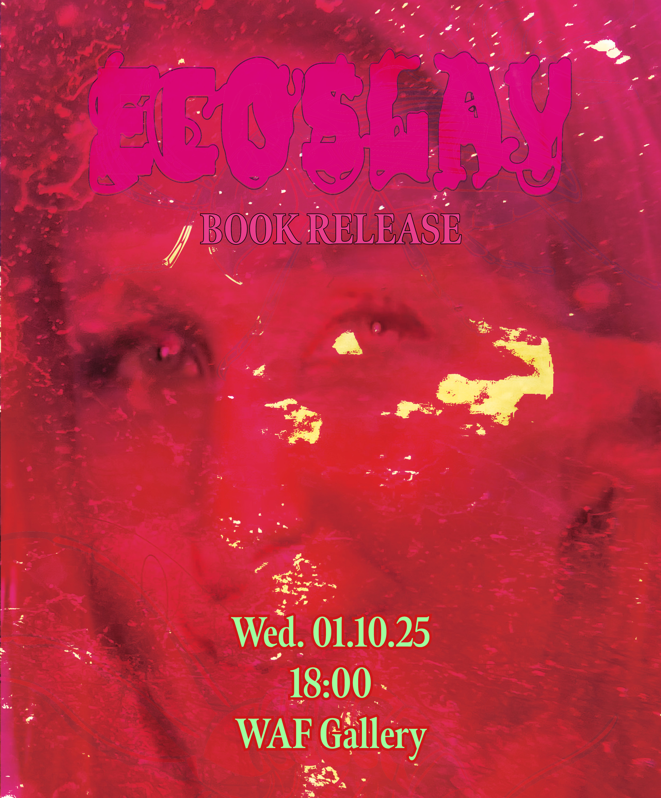
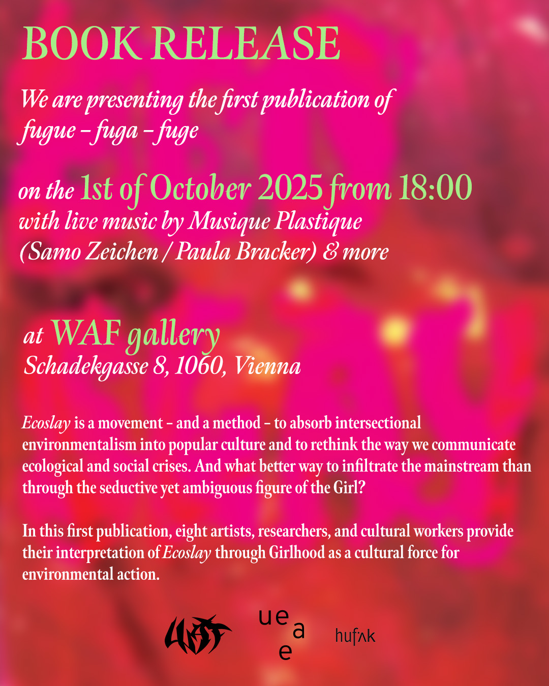
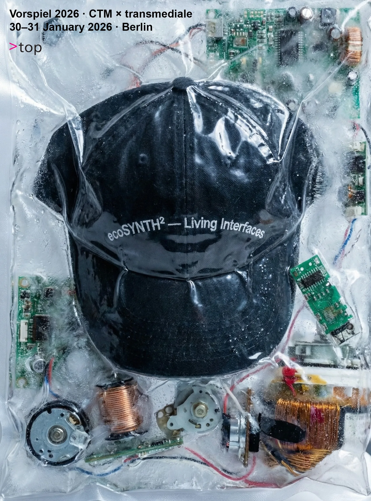
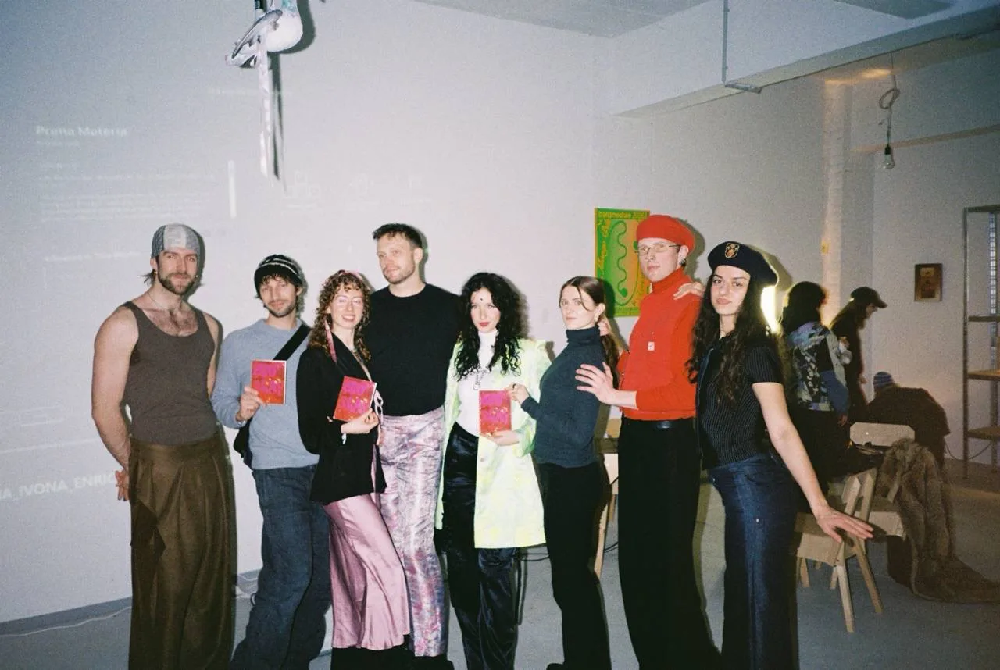
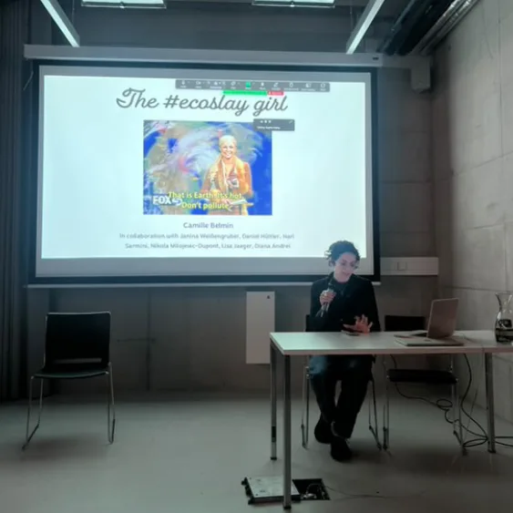
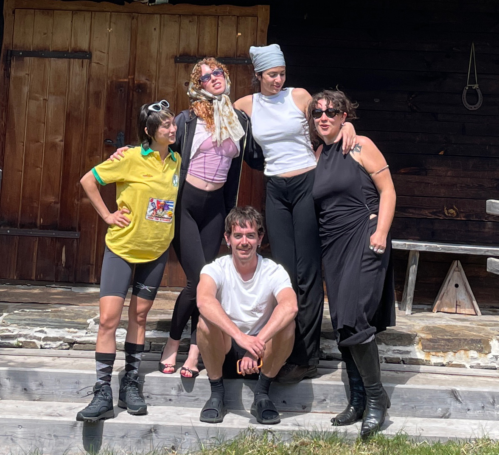

What is Ecoslay About
Ecoslay is a cultural movement and an organisation founded in 2025, operating at the intersection of art, science communication, and cultural practice. We use the language and tactics of pop culture to make ecosocial issues engaging, accessible, and to spark motivation to stay within the troubles of our time!

We are rooted in intersectional environmentalism and we strongly believe that protecting the integrity of the non-human world comes hand in hand with social justice.
We currently operate as an interdisciplinary collective of artists, researchers, and cultural workers based in Vienna and Berlin and we are a registered association under Austrian law.
But Ecoslay is not a fixed structure, but an evolving process: an experiment, a playground, and a shared inquiry. We invite anyone interested to take part in joining us to shape and experiment with this new cultural movement. Reach out to us for collaboration!
Our mission:
- Hope is (not) dead! Fighting doom and apathy, with a radiant positive energy that also acknowledges the darkness of our times.
- Shift the perspectives the mainstream culture has on the non-human world and key societal issues such as workers protection and social inequalities.
- Connecting different forms and sub-genres of pop culture with socio-ecological issues to ignite desire for action.
- Offering highly appealing content and bringing sharp perspective about urgent issues.
- Articulate dry scientific facts or alternative forms of knowledge like traditional ancient wisdom in more engaging forms.
Magazine
Issue 01: Ecoslay, an Anthology
Ecoslay is a movement – and a method – to absorb intersectional environmentalism into popular culture and to rethink the way we communicate ecological and social crises. And what better way to infiltrate the mainstream than through the seductive yet ambiguous figure of the Girl? In this first publication, eight international artists, researchers, and cultural workers provide their interpretation of Ecoslay through girlhood as a cultural force for environmental action.
Edited by Camille Belmin.
With contributions by Diana Andrei, Camille Belmin, Ramona Gomez, Lisa Jäger, Alokin Jaywalker, para-Center for Island Research, Daniel H. Pineda, Nari Sarmini & Janina Weißengruber.
Cover and graphics by Daniel H. Pineda. Layout and typesetting by Janina Weißengruber.
Published by fugue–fuga–fuge.
The book was supported by the Student Union of the University of Applied Arts Vienna.
Get Your Copy
Ecoslay, an Anthology is available to order by email at ecoslay@protonmail.com, to contact our publisher ue-a-e.com, or at the following bookstores:
Berlin
Copenhagen
Vienna
Budapest
New York
Paris
Bratislava
Open Call
Open Call for Contributions Ecoslay 02: The Urban Issue [CLOSED]
Setting the Scene
Cities are the ultimate fantasy settings: their urban and cultural landscapes set the scene for freedom, ambition, and reinvention. Or at least that's what we have been fed through pop culture since the beginning of time: suspiciously cheap romcom apartments, Gossip Girl maps, rooftop parties on abandoned garages, and sustainability aesthetics rendered in millennial greys and beiges.
However, the reality of a city is complex, multi-faceted, and doesn't always reflect this dream scenario: Heatwaves, gentrification, pollution, rising rent, housing crises, displacement, and environmental racism are all part of urban life, too. Who gets the parks, the shade, the livable neighborhoods, and most importantly, who doesn't? Who is entitled to shape the narratives of our cities, while others perform the labor manifesting these fantasies?
Yet not all hope is lost; cities can expand beyond collapse and crisis. Dominant narratives are not inevitable; they can be reshaped. The inhabitants of cities create spaces of resistance, solidarity, care, and collective imagination. Community gardens appear beside busy roads like small acts of refusal. Activists reclaim streets from cars. Mutual aid networks emerge in the gaps where institutions fail.
The city constantly produces forms of care, survival, and unexpected coexistence. Despite what every nature documentary still insists, nature is not “out there” somewhere beyond the city. The city is nature.
Seeking Contributions for the Second Issue of Ecoslay
For the second print issue of Ecoslay, we're exploring the city as a space where intersectional ecological futures are not just designed, but negotiated, contested, resisted, and reinvented every day.
And we're doing it the Ecoslay way: For us, pop culture and its influence can be analyzed and hijacked to communicate socio-ecological issues and ignite systemic change.
What happens when climate politics meets internet culture, when urban ecology meets reality TV, and when sustainability discourse collides with camp, irony, humor, and memes?
How are cities imagined through the lens of popular culture? What are the promises and failures of marketing to spur ecological urban transformation? How do these processes intersect with privilege and class? How can movements within mainstream, pop culture, and online contexts lead to real and lasting change? What can climate memes, green influencers, apocalypse movies, sustainability TikTok, and celebrity environmentalism tell us about how we understand crisis and imagine different futures?
We're looking for contributions in formats including, but not restricted to: essays, interviews, science communication outlets, poems, visual art, documentation of (art)works, fiction, and more, on topics such as:
- Urban climate communication through humour, memes, and pop culture
- Greenwashing, eco-branding, and sustainable aesthetics in urban contexts
- Urban farming, more-than-human life, housing crises, displacement and green gentrification, class and the city, Maintenance and care work in relation to urbanism, urban environmental justice, community organizing ... and how these relate to pop culture.
- Reflections on what Ecoslay means in an age of overlapping crises
Project Timeline
The selected participants are expected to deliver one contribution to the second issue of Ecoslay Mag, and the attendance of two online workshops with the editorial team and the selected contributors for a communal exchange and feedback round on the proposals and work-in-progress.
Open call launches: June 25thOpen call closes: July 13Announcement of selected contributorsEmails were sent out on Aug 17-19, check out your mailboxes and reach out if you did not receive a message from us!- Work on contributions and edition: Sep 2026 - Spring 2027
- Release of ECOSLAY #02: Spring 2027
What We Offer
- Financial compensation for selected contributions
- Editorial support from our team
- Edition, proofreading, and graphic design will be taken care of by our team
Events
Upcoming Events
Stay tuned for our next events!
Past Events
On June 27–28, 2026 we hosted Snacks and the City at WAF Galerie in Vienna — a weekend of collective gatherings that explored urban food ecologies and the politics of consumption in the city. Across two days, the programme wove together a foraging walk, a food installation, a kombucha bar, a DJ set, a panel talk and a dumpster-dived buffet around a single question: what does the city feed us, and what do we do with what it leaves behind? Starting with the plants sprouting in concrete cracks and ending at the trash bin, the weekend moved from gathering to tasting to talking — a "date with edible plants and trash bins" that turned the gallery into a space to think, eat and dance together.
Saturday opened with an Urban Foraging Workshop led by transdisciplinary artist Gaja Pegan Nahtigal, who guided us through the practice of foraging, sharing her situated knowledge of self-sprouted plants growing in Vienna's concrete jungle through plant–human interaction. The walk flowed straight into Gaja's curated Girl Dinner — not a sit-down meal, but a beautifully designed food installation featuring the very plants we had just learned about, tasted together as a post-walk debrief. The evening continued with the opening of a Kombucha Bar by our own Nari, who served freshly brewed herbal and berry-infused kombucha, followed by music and hangouts with DJ zey, whose set bridged Footwork, Jersey Club, Gqom, Jungle, Baile Funk, Bouyon, Batida and Kuduro across the evening.
Sunday's Panel Talk on Urban Food Politics broke down the politics of what, how and why we eat in the city, pulling a red thread between foraging wild plants in concrete cracks, dumpster diving and food solidarity networks, and food preservation. The conversation brought together Gaja Pegan Nahtigal and Vienna's grassroots collective Robin Foods, known for their communal dumpster-diving actions and community buffets — moderated by Ecoslay founder Camille Belmin. The weekend closed with a Trash Food buffet by Robin Foods, rescued straight from the dumpster.
Thanks to everyone who joined — and to WAF Galerie for hosting and Kulturförderungen der Stadt Wien Kultur (MA 7) for funding the event. 🦠
In November 2025, we were pleased to organise the book release of Ecoslay, an Anthology in Berlin at Casino for Social Medicine. Our founder Camille Belmin introduced the book, Alokin Jaywalker made a performance lecture about his contribution "Sex Sells, Even Socio-Ecological Narratives?" and Ramona Gomez performed her poetry piece "Witnessing the Chaos from Above".


We were pleased to celebrate the first edition of our magazine ECOSLAY: an Anthology, published with fugue-fuga-fuge, on 1st October 2025 at WAF Galerie, Wien. The line up featured a book presentation from collective founder Camille Belmin, a performative poetry reading from collective member and artistic contributor Ramona Gomez, followed by a celebratory reception with drinks. The evening was soundtracked by material experimental musician duo Musique Plastique.
The profits of 803.24 euros from the first edition were donated to The Palestinian Institute for Climate Strategy, an NGO dedicated to integrating ecological resilience and steadfastness with strategies to confront the challenges of ecocide, apartheid, and colonialism in Palestine.
This was a work of love and community, between 8 international artists, researchers, and cultural workers — above all FRIENDS — who worked and discussed passionately (and voluntarily) on the topic for a year.


Ramona Gomez and Camille Belmin presented Ecoslay and performed at ecoSYNTH², as part of Vorspiel 2026 (CTM × transmediale), hosted by TOP Lab, a transdisciplinary community space and Berlin's first DIY biolab.
Link to the event: https://vorspiel.berlin/events/ecosynth²-living-interfaces/

On January 14 2025, our founder Camille Belmin presented the project at the Symposium "Updating the Girl Online" organized by the Weibel Institute for Digital Cultures at the University for Applied Arts Vienna. More info here: https://www.dieangewandte.at/termine/symposium_updating_the_girl_online_14-01-2025.
Team

Members
Diana Andrei
Diana Andrei, myth to many and legend to some, is a transdisciplinary artist, filmmaker, and writer based in Vienna and (sometimes) Marseille. Living in the trenches of reality, where everything and nothing ever cross paths, she enjoys exploring questions of (hu)man-made artificiality, with a special focus on how ideologies and social doctrines materialize within and from our worlds. Flirting with various media like film, performance, sculpture, text, and YouTube comments, her works become materializations themselves, participating in the entangled discourse of how we (re)create our realities.
Ramona Gomez
Ramona Gomez (b. 1998) is an artist, urban ecologist, and curator living in Berlin. Originally from Los Angeles, she holds a Bachelor's in Fine Arts and Urban Studies from University of California, Los Angeles. In Berlin, she is the shop manager of Chapters Bookshop, through which she has collaborated with institutions such as C/O Museum, American Academy in Berlin, Each One Teach One, and Wirchlichkeit Press. She is a co-founder of the Ecoslay collective, where she contributed to and collaborated on the editorial process and event production of Issue 01 and Issue 02. In her personal visual arts practice, she conducts creative research about the cultural, historical, and ecological importance of pigeons. She is building her practice as an animal architect through pigeon activism, taxidermy, painting, photography, writing, and performance.
Camille Belmin
Camille Belmin is a researcher, artist, curator, and lecturer and the founder of Ecoslay. Her work explores narratives and modes of communication that shape socio-ecological transformations. She has several years of experience in fostering dialogue between artists and scientists to advance engagement in environmental crises, as well as curating art-science exhibitions.
In her artistic practice, she works with installation, lecture performance, and text, often collaborating with metabolic processes—from composting and fermentation to social metabolism. She holds a PhD in sociology from Humboldt University, Berlin.
Alokin Jaywalker
Alokin Jaywalker is a writer who, as his name suggests, likes to cross the street when the pedestrian traffic light is red. He displays similar dispositions in his work about digital culture, politics, and, of course, the tyranny of cars in cities. Via the mundane metaphor of jaywalking, which highlights how we’ve organized street space and social conventions around capitalism rather than people, Alokin questions what in current discourses feels absurd and driven by power dynamics, but also looks for avenues to get ourselves out of politically engineered cul-de-sacs.
Nari Sarmini
Nari Sarmini is an independent curator, writer, and cinephile from Vienna. Having grown up navigating diverse cultural backgrounds, her perspective is deeply rooted in the experience of existing outside mainstream society. Today, her practice serves as a critical battleground against normative systems and a vehicle for the desire to connect meaningfully with this world. By actively engaging with pressing contemporary crises and integrating marginalized narratives into dominant culture, she seeks to reclaim agency through creative defiance. This impulse is precisely what drives her involvement with Ecoslay: turning shared vulnerabilities, climate anxiety, and pop cultural trends into a collective site of subversion, healing, and resistance.
Contact
For general inquiries or collaboration proposals, reach out to ecoslay@protonmail.com. Follow us on Instagram for regular updates and fun content!
Partners
Ecoslay thrives through community. We have worked with an extended network of collaborators across the cultural and creative sectors: Ado/Aptive, Science Meets Art, Fugue-Fuge-Fuga, Wiener Art Foundation, Klasse fuer Alle, Arts of Change.
Impressum
ECOSLAY — Verein zur Förderung des ökosozialen Engagements und der wissenschaftlichen Kommunikation durch Popkultur und Kunst (ZVR-Zahl: 1051651579)